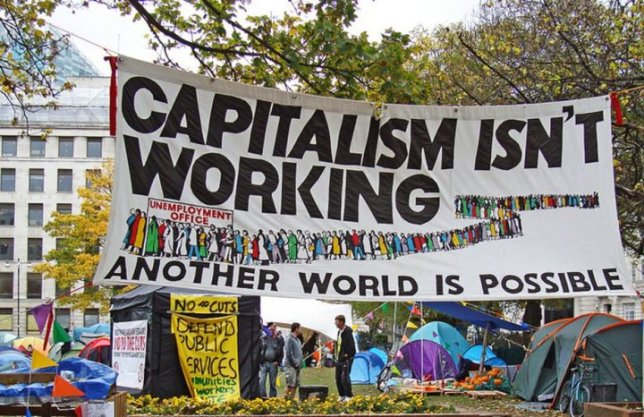

Today’s Agenda
Section 3: Current Challenges in American Environmentalism
3.2 Capitalism: The “Need” for Growth Versus an Exhaustible Environment
- Reflecting on our Behavior as Consumers
Justin Leinaweaver (Fall 2026)
Ozark’s Food Harvest Distribution Center

Springfield Community Gardens

Efforts to Promote Environmental Justice in SW MO
Group name
Problem being targeted?
Action taken?
How do we get involved?

Reflecting on our Behavior as Consumers
What are the specific decisions you make, things you buy or actions you take on a somewhat regular basis that have the biggest negative impact on the environment?
Section 3: Current Challenges in American Environmentalism
3.2 Capitalism: The “Need” for Growth Versus an Exhaustible Environment
- Wk 11 Did American Capitalism Produce a “Dust Bowl”?
- Wk 12 Is Global Capitalism (e.g. globalization) Risking Dust Bowls Around the World?
- Wk 13 Where is the Line Between Impactful Environmental Advocacy and Eco-Terrorism?
- Wk 14 Has Capitalism Co-opted Environmentalism?

For Next Class
Read excerpts from Worster’s (1979) Dust Bowl
- Chapter 3 (p44-63)
- Chapter 5 (p80-98)
- Chapter 14 (p210-230)
Submit at least three key premises to Canvas